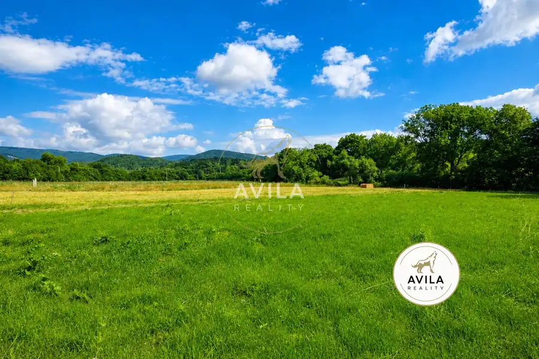
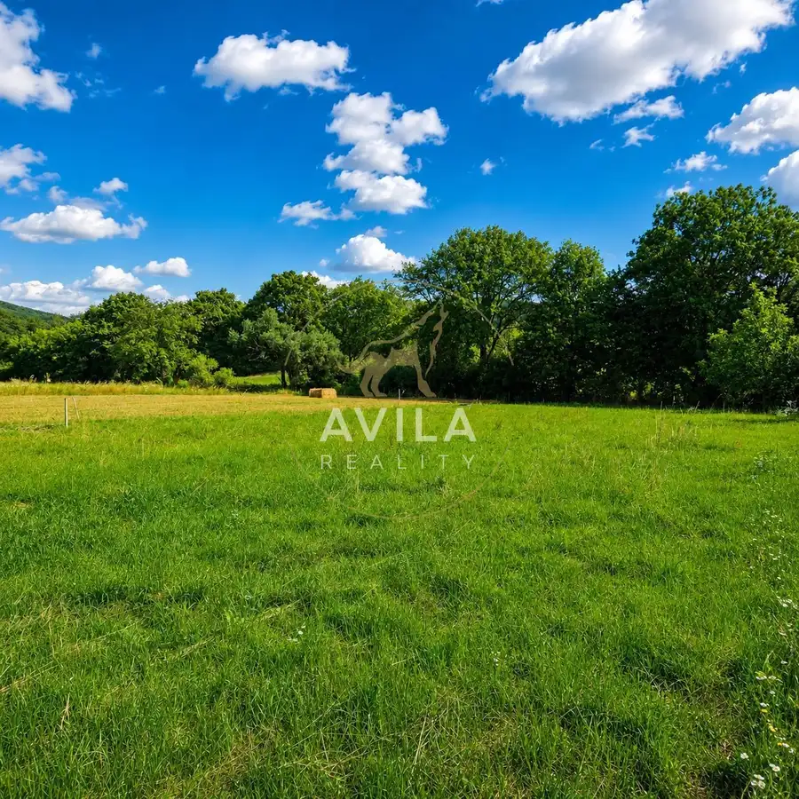
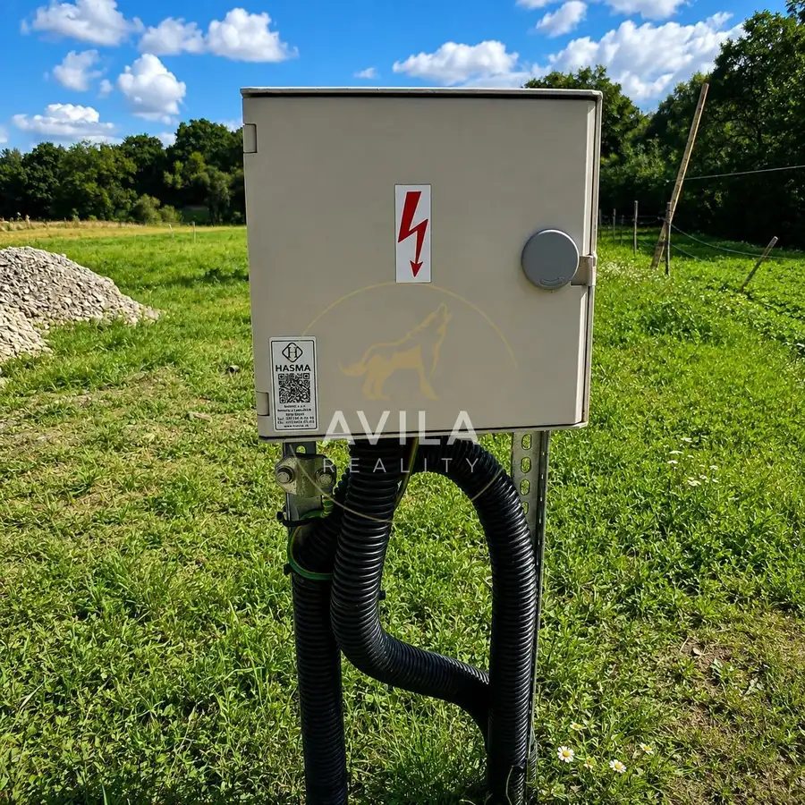
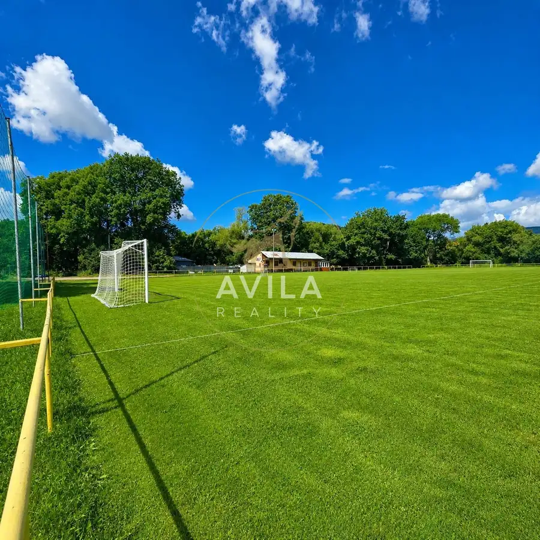
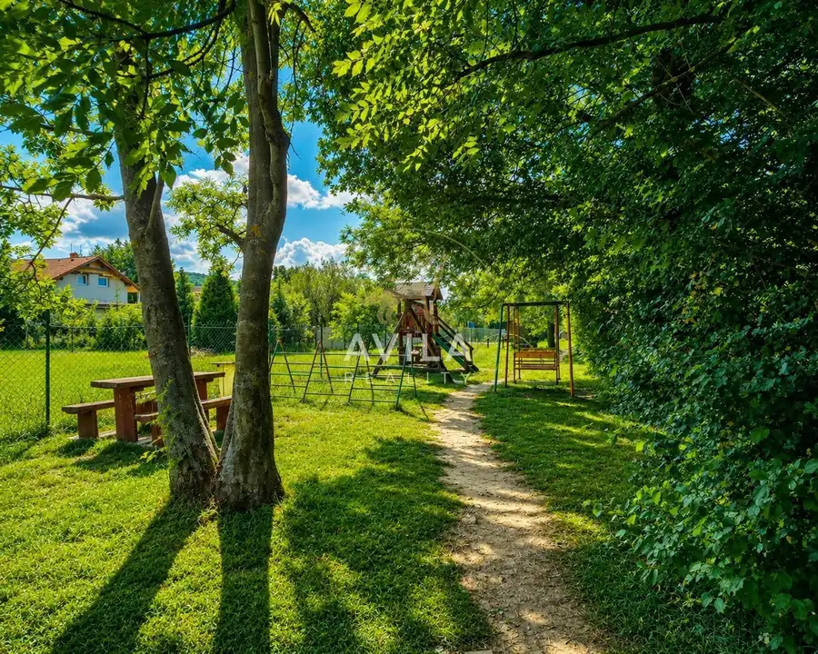
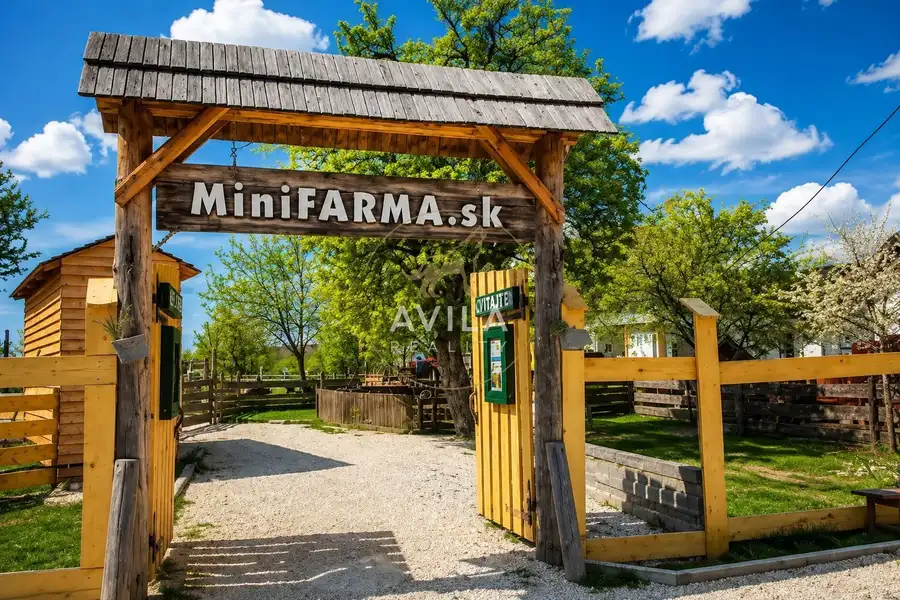
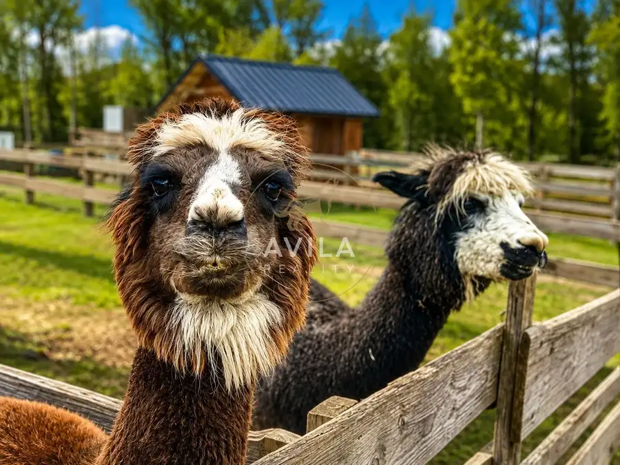
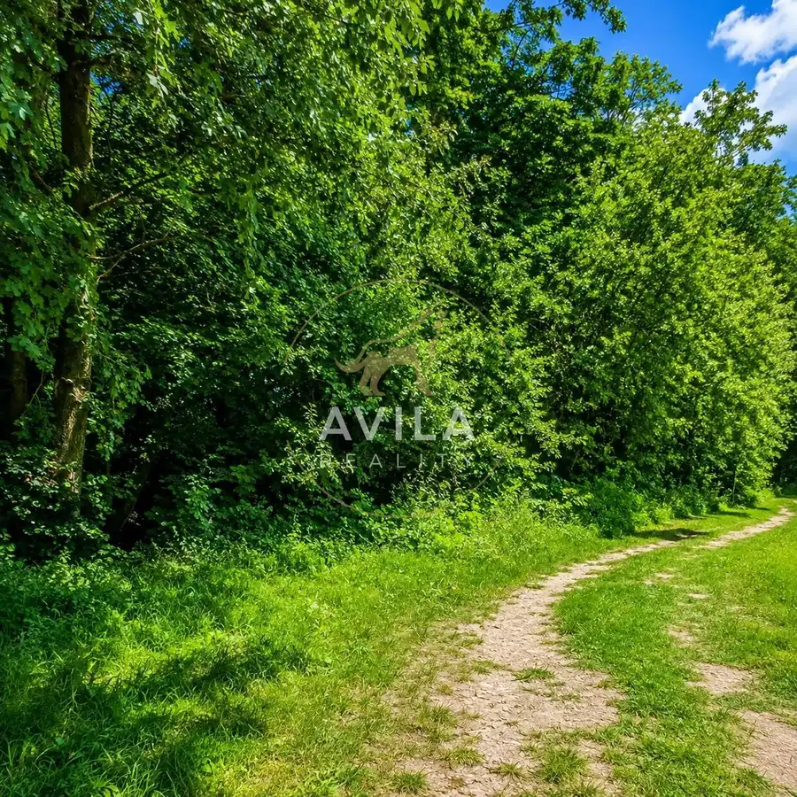
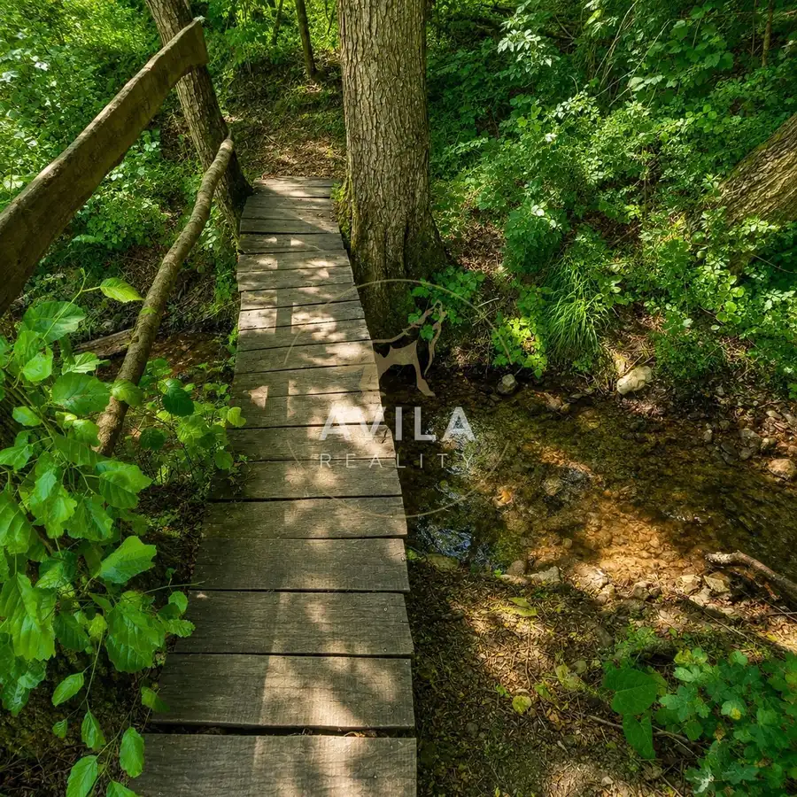

AVILA - Pozemok 615 m² na RD | Lubina
Lubina










- Plocha615 m²
O nehnuteľnosti
Sme AVILA. Už roky spájame ľudí s ich novým domovom. Kontaktujte nás.Stavebný pozemok s výmerou 615 m² v pokojnej časti obce Lubina – Hrnčiarové. Rovinatý terén, praktické rozmery približne 20 × 30 m, vybudovaný verejný vodovod, elektrická prípojka a veľmi príjemné prírodné prostredie.Silnou stránkou tejto nehnuteľnosti je najmä lokalita – pozemok je obklopený zeleňou, v blízkosti sa nachádza potôčik, detské a futbalové ihrisko a okolie ponúka množstvo možností na turistiku, cyklistiku a trávenie voľného času.___________________________________________POZEMOK□ výmera: 615 m²□ rozmery: približne 20 × 30 m□ rovinatý terén□ slnečný□ obklopený zeleňou□ vhodný na výstavbu rodinného domuK pozemku vedie obecná asfaltová komunikácia, na ktorú nadväzuje približne 100 metrov dlhá obecná spevnená štrková cesta. Posledný úsek tvorí súkromná prístupová cesta, pričom spoluvlastnícky podiel na nej je súčasťou predaja (podiel na parcele o výmere 210 m² podiel 1/3).LOKALITALubina – Hrnčiarové je pokojná lokalita v prírodnom prostredí Bielych Karpát.V bezprostrednom okolí nájdete:□ potôčik□ detské ihrisko□ futbalové ihrisko□ turistické a cyklistické možnosti□ Veľkú Javorinu□ FarmaPARK Lubina□ obľúbený Country Saloon Cetuna___________________________________________Cena: 39 900,00 EUR___________________________________________Radi vám tento pozemok osobne predstavíme. Kontakt: Erik Vicena +421 949 630 001, erik.vicena@avilareality.sk___________________________________________Sme AVILA. Spájame ľudí s bývaním, ktoré si zamilujú.
Parametre
- Druh
- Pozemok pre rodinné domy
- Dátum zverejnenia
- 04. 08. 2026
- Dĺžka pozemku
- 30
- Elektrina
- Na pozemku - 230 V
- Funkčné využitie
- Výstavba rodinného domu
- Odpadové vody
- Nedostupné
- Plocha pozemku
- 615 m²
- Plyn
- Nedostupné
- Pripravenosť k výstavbe
- Vydané územné rozhodnutie
- Terén pozemku
- Rovinatý
- Typ
- Predaj
- Voda
- Na pozemku - Diaľkový vodovod
- Územie
- Intravilán
- Šírka pozemku
- 20
Kde to je


Mohlo by Vás zaujímať
 Komerčné priestoryNové
5 000 €AVILA - výrobná hala 1764m2 | Nové Mesto nad Váhom
Nové Mesto nad Váhom
1764 m²
Komerčné priestoryNové
5 000 €AVILA - výrobná hala 1764m2 | Nové Mesto nad Váhom
Nové Mesto nad Váhom
1764 m²
 Komerčné priestoryNové
129 900 €AVILA - Zabehnutý hostinec v centre obce Bzince pod Javorinou
Bzince pod Javorinou
112 m²
Komerčné priestoryNové
129 900 €AVILA - Zabehnutý hostinec v centre obce Bzince pod Javorinou
Bzince pod Javorinou
112 m²
 Komerčné priestoryNové
Cena na vyžádáníReštaurácia pripravená na okamžité podnikanie – Horná Streda
Horná Streda
751 m²
Komerčné priestoryNové
Cena na vyžádáníReštaurácia pripravená na okamžité podnikanie – Horná Streda
Horná Streda
751 m²